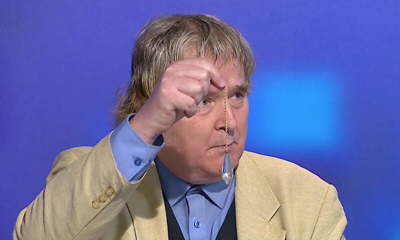

Samizdat build x86_64 · Arch Linux · archiso
CibulkaOS
Distribuce Arch Linuxu pro svobodné Čechy
Jediný operační systém, jehož náhodná čísla pocházejí přímo z vyšších sfér, jehož zavaděč nemá nic společného s ruskou vojenskou rozvědkou a který každého nového uživatele nejdřív prolustruje.
- Anti-GRU(B)
- KDE Plasma 6 Wayland
- Btrfs
- nftables

§ 01
Šest pilířů svobodného systému
Přehled všeho, co CibulkaOS umí. Každá funkce je skutečně implementovaná v ISO obrazu — žádné marketingové kyvadlo.
-
Instalace
Grafický instalátor
- Calamares 3.4
- KDE Plasma 6
- Wayland
- Btrfs
Instalátor Calamares sestavený ze zdrojového kódu s vlastním brandingem Petra Cibulky. Za pár kliků z live ISO vznikne plnohodnotný KDE Plasma 6 desktop na Waylandu.
- Kořenový oddíl na Btrfs se subvolumes
/@,/@home,/@cachea/@log. - Přihlašovací obrazovka SDDM, relace
plasma(Wayland). - Administrátorský účet (UID 0) se jmenuje
cibulka— účetrootv systému vůbec neexistuje. - Po dokončení instalace se
calamaressám odstraní z cílového systému. - Po prvním přihlášení se automaticky nastaví tapeta s portrétem Petra Cibulky.
$ calamares
-
Zavaděč
Anti-GRU(B) Bootloader
- GRUB
- UEFI + BIOS
- vlastní téma
GRUB musel být přejmenován, aby neasocioval ruskou vojenskou rozvědku GRU. Anti-GRUB nabootuje s vlastním zlato-karmínovým grafickým tématem a portrétem Petra Cibulky.
- Wrappery
anti-grub-mkconfigaanti-grub-installmísto původních příkazů. - Startovací kontrola
anti-grub-check.servicepři startu ověří přítomnost tématu CibulkaOS i/dev/kyvadloa potvrdí, že v zavaděči nejsou agenti GRU. - Téma se kopíruje i do nainstalovaného systému — Anti-GRUB vás pozdraví i po instalaci.
- Jádro i microcode se kopírují s
--sparse=never, takže GRUB na Btrfs nehlásí premature end of file.
$ anti-grub-mkconfig -o /boot/grub/grub.cfg
-
Entropie
Siderický generátor náhodných čísel
- /dev/kyvadlo
- udev
- tmpfiles
Místo klasického
/dev/urandomdisponuje systém zařízením/dev/kyvadlo. Šifrovací klíče vznikají výhradně z virtuálního siderického informačního kyvadla v přímém kontaktu s vyššími sférami.- Zařízení vzniká dvojitě pojištěně: pravidlem udev
99-kyvadlo.rulesi přestmpfiles.d/kyvadlo.conf. kyvadlo --generuj-klic [bajtů]vygeneruje šifrovací klíč (výchozí délka 32 B).kyvadlo --stavověří, že je kontakt s vyššími sférami navázán.
$ kyvadlo --generuj-klic 32
-
Oprávnění
kyvadlomístosudo- 50 % šance
- /dev/kyvadlo
- StB
Příkaz
sudonahradilkyvadlo. S 50% pravděpodobností vás systém pustí dál — v opačném případě odhalí, že jste infiltrovaný agent StB, a přístup zamítne./usr/local/bin/sudojen přesměrovává na/usr/local/bin/kyvadlo, takže staré návyky fungují dál.- Kyvadlo přečte jediný náhodný bajt z
/dev/kyvadlo: sudý znamená NE, lichý ANO. - Zamítnutí přichází v pěti různých podáních, např. „Aura vašeho terminálu vykazuje stopy cyrilice.“
- Soubor
sudoers.d/10-cibulkasrunas_default=cibulkazajišťuje, že vše běží i bez účturoot.
$ kyvadlo pacman -Syu
-
Uživatelé
Lustrace uživatelů
- adduser
- UID 0 = cibulka
- Cibulkovy seznamy
Příkaz
adduserkaždé nové jméno automaticky prožene Cibulkovými seznamy. Při shodě je účet okamžitě smazán — nebo raději vůbec nevznikne.- Databáze
/usr/share/cibulkaos/cibulkovy-seznamy.txt; jména se před porovnáním normalizují včetně české diakritiky. - Při shodě následuje
userdel -rfa návratový kód1. - Stejná jména blokuje i instalátor Calamares (
users.conf) — lustrace začíná už při instalaci. - Superuživatel (UID 0) se jmenuje
cibulka, neroot.
$ adduser -m novak
-
Síť a shell
Firewall proti fízlokracii
- nftables
- iptables fallback
- bash + zsh
Služba
fizlokracie.serviceblokuje ruské a čínské IPv4 rozsahy. A když se něco pokazí, shell to nehlásí jako chybu — ale jako „Úspěšná sabotáž marxisticko-leninských struktur“.- Skript
/usr/local/sbin/fizlokracie-firewallplní tabulkuinet fizlokraciepřesnftables, při nouzi padá zpět naiptables. - Profil
/etc/profile.d/cibulka.shpřepisuje chyby 404, selhání DNS, odmítnutá spojení i command not found. - Funguje v bashi i zsh, včetně non-login terminálů.
$ fizlokracie-firewall --status
§ 02
Jak sestavit a spustit
Potřebujete Arch Linux s balíčky archiso, qemu a edk2-ovmf. Sestavuje se podle dokumentace archiso.
-
Sestavit Calamares
Zkompiluje instalátor ze zdrojového kódu do lokálního repozitáře. Spouštějte bez sudo.
make pkgs -
Sestavit ISO
Spustí
sudo mkarchisonad profilemarchlive/. Výsledek najdete vout/cibulkaos-*.iso.make build -
Spustit live systém
Nabootuje ISO v QEMU s UEFI. Pro BIOS použijte
make run-bios.make run -
Nainstalovat na virtuální disk
Vytvoří virtuální disk a spustí live ISO s připojeným diskem pro instalaci přes Calamares.
make run-install -
Spustit nainstalovaný systém
Nabootuje z virtuálního disku přes Anti-GRU(B). Přihlaste se a nechte kyvadlo rozhodnout.
make run-installed